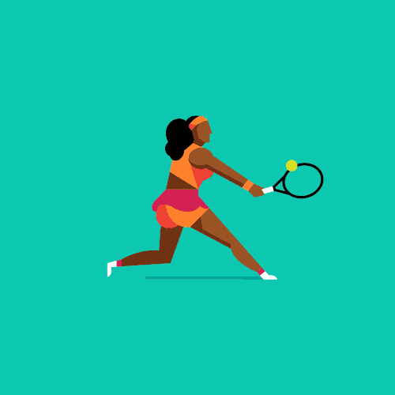

If you are on a mission to build muscle mass and you want to do it fast, we will show you how.
As with any workout, the key to success is eating the right diet, drinking plenty of water, getting a good night’s sleep, and most importantly, making sure you are doing exercises that will help you achieve your goal.
Building muscle quickly is possible but you have to do the right things.
After all, not only do you want to build solid muscle, but then maintain it after all the effort you have put in.
To build muscle, you need to make sure you are getting the right amount of protein daily. Each person is slightly different based on body type but also the way in which the body responds to training program.
Therefore, the easiest way to determine the appropriate amount of protein so you can build up to 10 pounds of muscle in one month or less, you need to make the calculation on your lean body weight.
For this, take your current weight and minus the percentage of body weight. Then, multiply that number by 1.14. This will tell you the right number of grams required to build solid muscle quickly.

At first, to build up to 10 pounds of muscle in one month or less, make sure you do the following at minimum, using three sets, each of 15 repetitions:
Another way you can gain up to 10 pounds of muscle in less than one month is to make sure you eat right.
However, in addition to eating protein, low carbohydrates, and fresh fruits and vegetables, you might also consider adding a high quality supplement.
The important thing to remember is that some supplements are a waste of money in that they are not formulated to absorb into the body. Therefore, always by only quality supplements, those made to get into the bloodstream where they can work.
If you were to ask both men and women which part of the body they are most interested in building muscle for, the abs would be at the top of the list. Therefore, if you want to build rock hard abs in one month, get ready for dedication, persistence, and lots of hard work.
To get the abs you want, you will need to focus only on those muscles on a scheduled basis, usually two to three times a week. Crunches are by far the most effective, which gives you the ripped look you want but also an increase in metabolism so your body is capable of burning stored fat.

We also wanted to address circuit training versus free weights for building up to 10 pounds of muscle in one month or less. Typically, you want to use both but not on the same day. When building muscle, it is vital to switch things up.
The reason is that if you work arms and abs one day, legs and chest another, and then shoulders and cardio on the next day, you give the body’s muscle time to recover.
Every time you work out, you are breaking muscle down so it can be built up stronger. Therefore, using both free weights and circuit training allows the body to rest and muscle recovery so you get amazing results.

To maintain the perfect balance in intake of calories than you burn, you need to determine the right amount of calories for you since each person is different.
Although there are a number of ways to figure this out, the eases is to weigh yourself and then follow one of these calculations:

As we mentioned, you need to consume the right amount of protein, carbohydrates, fruits, and vegetables, as well as fats to gain up to 10 pounds of muscle in one month or less.
In addition, you will need to stop eating three large meals a day and start eating six smaller meals. This will help maintain your metabolism so each of your workouts is successful.
Just as diet is important for building muscle, water intake is just as important.
It is recommended that you drink a minimum of eight glasses of water daily. This will flush out harmful toxins, keep the body lubricated, and make sure you are properly hydrated for a hard workout.
This way, your workout is effective and the results much quicker.
Along with free weights and circuit training, you will also need 9% of your workout to be dedicated to cardio.
This is outstanding for burning fat, increasing energy, and boosting the metabolism.
Some of the most popular cardio options are: